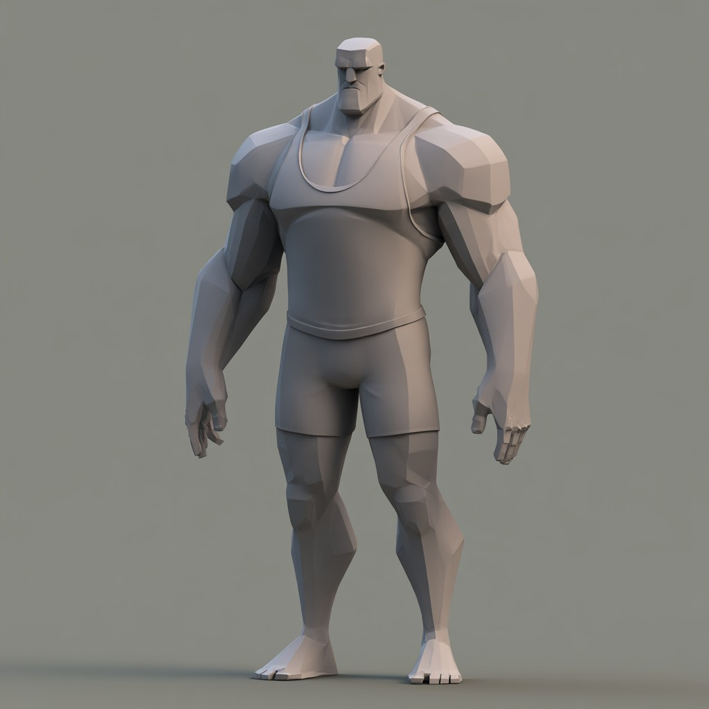
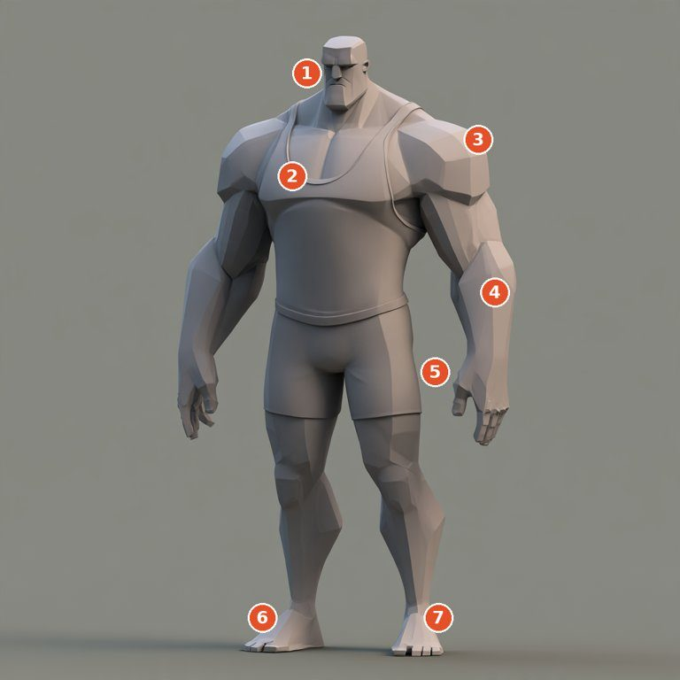
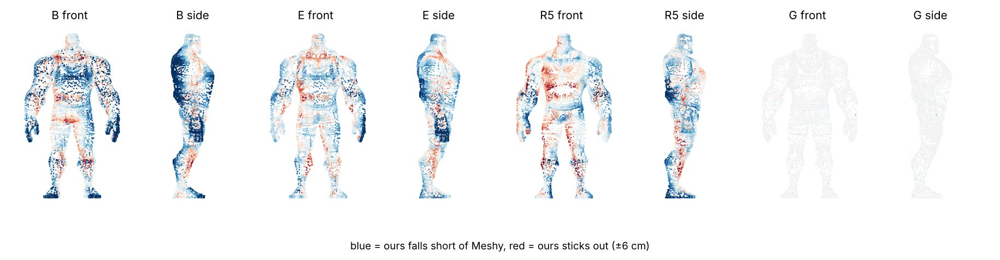
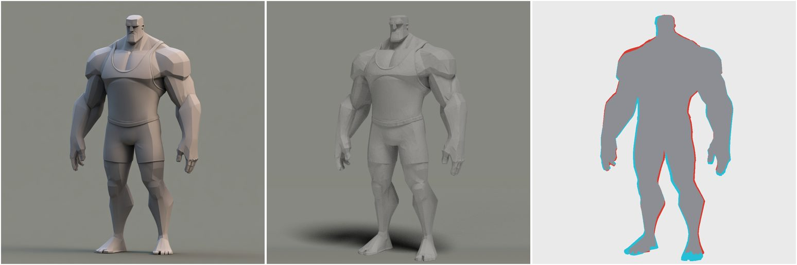
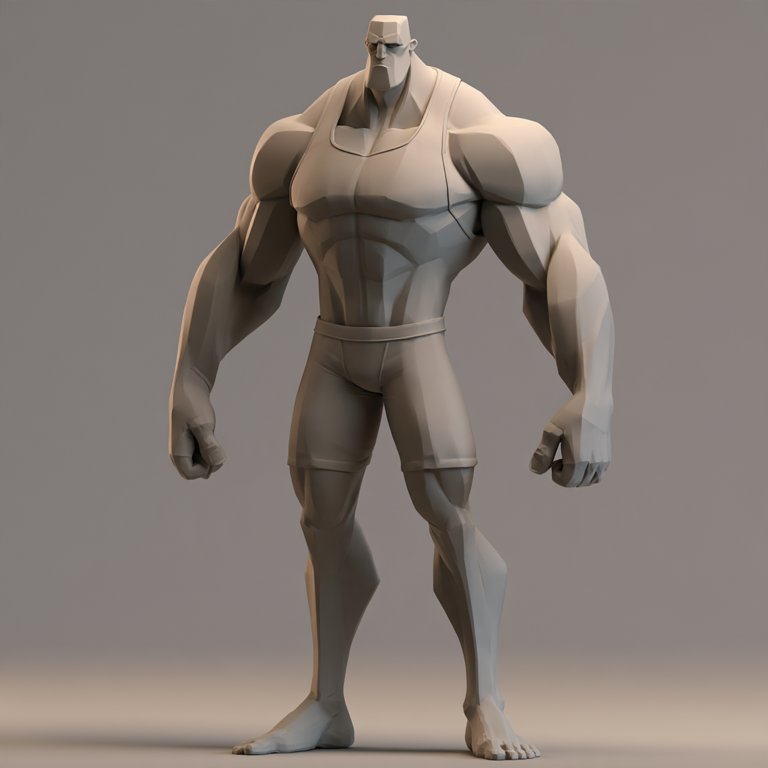

One brute, built many ways. Each arm splits the Blender work differently; every result is rendered from the reference's own camera and scored against it. The method that lands closest to this exact figure, hands, fingers, face and nose included, wins.
Shell: no runs yet
ReferenceOur score was wrong. Hand-built arm C scored 0.957 against his picture and Meshy scored 0.915, yet measured in 3D, C is 4.3 cm off Meshy's body on average and our own learned build is 2.4 cm off. The score rewarded a wrong model over a right one, because his picture is not a front view.

The camera is turned about 23° (two checks agree: 24° and 23°). The brief told every arm "the reference is a front view". Agents did log "head turned 7°" and "foot turned 43°", but each was written down as pose and nobody was allowed to question the brief. So every arm built a square body and stretched its outline until a square camera matched a turned picture. Scoring only that one outline could never catch it, and the side and back we added came from the Midjourney turnaround, which is itself a guess.
Meshy's body, painted by how far each build is from it. Blue means ours falls short. Front-to-back, the hand builds fall short twice as much as side-to-side: chest depth 35 to 45 cm against Meshy's 51. The back of every hand build is dark blue: no trapezius, no lats, no shoulder blades, no spine curve. Arms are the worst region (3 to 4 cm thin all round); head and thighs, the parts the picture shows squarely, were fine.

| Arm | How it was built | Average gap to Meshy | What it taught |
|---|---|---|---|
| A–D3 | Six chunks, split six ways (crops, parallel, top down, feet up, torso out, face last) | 3.5–4.5 cm | Order barely mattered. Torso out (D2) was best. |
| E | Anatomy first: a skeleton, depth from the turnaround | 2.6 cm | Where depth comes from is what matters. |
| R5 | Learned: a body model with 29 named settings fitted to Meshy, plus a head fit | 2.4 cm | Best of our own builds at chest, neck and head. Forearms and feet still thin, and built 12% too short. |
| M | Meshy image-to-3D, 43 s | the answer key | Matches his picture's outline at 0.961 once turned 23°. |
| G | Meshy's surface on our ring cage, cut to 3,000 faces | 0.8 cm | Best asset, but it's dressing, not learning. |
None of those steps reads his picture. The shape is all Meshy's.
His picture, Meshy turned 24°, and the two outlines over each other. Meshy's hands are smaller and set higher, its feet shorter, its head a little narrower, and the tank top's rolled trim is smoothed away. His picture's camera is also lower and a little wider than ours, which makes his feet and legs bigger.

Brute #2 test, scored against his Meshy model: brute #1's settings as they are, 0.737; refitted, 0.762; a guess from his picture alone, by an agent that saw no 3D, 0.718. The settings carry real knowledge, but one picture still doesn't give depth. Once a picture-only guess with these rules reaches the refitted score, a new figure costs nothing but our own Blender time, and Meshy becomes an occasional audit.
Meshy made a near-perfect 3D model of him from his picture in about 40 seconds (arm M). Arm G learns from it: every 2 cm of height the Meshy body is cut into rings, one stack per named part (torso, each arm, each leg, the hands). The rings are the recipe. They are written down in numbers and in words, they drive Meshy's own surface like a cage, and Blender takes the result to whatever polygon count we ask for.
python3 scale/learn.py
→ spec.json, spec.mdpython3 scale/edit.py scale forearm --width 1.2 --depth 1.2 --say "make his forearms 20% bigger"python3 scale/deform.py --spec spec --ratio 0.1 --shotspython3 scale/edit.py measure forearm
python3 scale/edit.py undoHis picture, then Meshy's model, then ours at 3,000 faces. Drag to orbit, pinch or scroll to zoom.

His pictureTop row: Meshy. Bottom row: ours. From the left: front, three-quarter, side, back, then his picture's camera. Click any sheet for full size.
Lower loss is better; higher IoU is better. Side IoU compares his profile with the Midjourney turnaround of the same guy, which is where depth shows. Per-part squares fill from pale to green as each chunk's own silhouette IoU rises: head, chest, right arm, left arm, hips, legs.
| Arm | Method | Silhouette IoU | Loss | Side IoU | Per part | Time | Cost | Status |
|---|
Same reference, same six chunks, same Blender recipe kit and the same budget per job. Only how the work is split and ordered changes.
In arm A each job sees only its crop below. In the other arms each job sees the whole figure and owns one chunk.